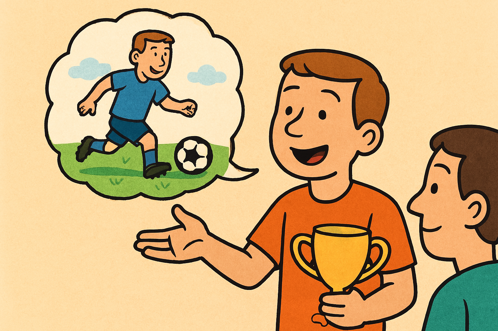

Traducció: El partit de futbol
Tradueix aquestes frases del català a l'anglès. Escriu la teva resposta, clica Comprova o prem la tecla Retorn i escolta la frase correcta.

Nota lingüística:
- football / soccer: "football" s'utilitza al Regne Unit; "soccer" és més comú als Estats Units.
- match / game: "match" és més habitual per parlar d'un partit formal de futbol. "game" és més general.
- trophy / cup: "trophy" és un trofeu en general; "cup" s'utilitza sovint per competicions com la "World Cup".
- picture / photo: "take pictures" és més comú en anglès del dia a dia que “take photos".